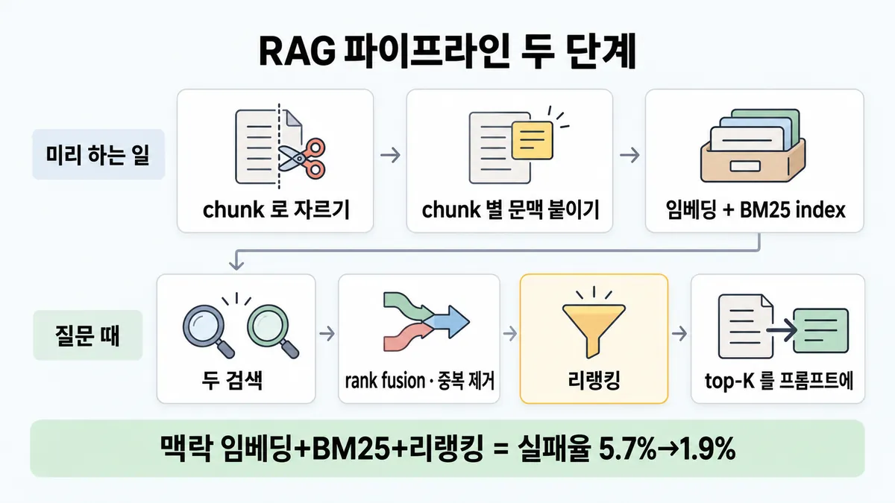
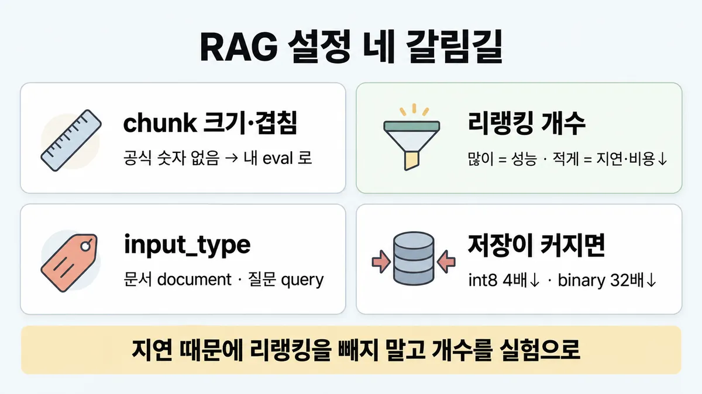
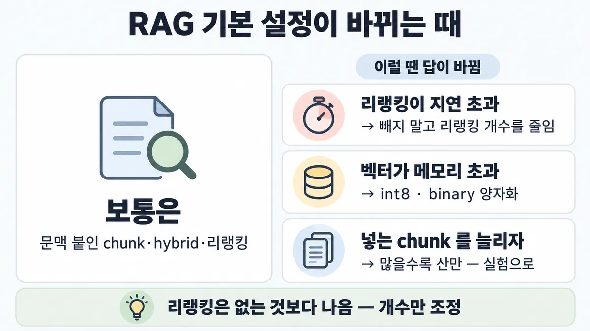

■ RAG 파이프라인
표시가 없는 문장은 공식 문서에서 확인한 내용이에요. 다른 표시는 읽는 법
왜 배우나 — 시험이 요구하는 것
시험 목표 3.5 RAG 파이프라인 · D3 연결 19%Design a RAG pipeline with appropriate chunking and indexing strategies
이 개념으로 푸는 판단 (할 수 있어야 하는 것)
- 3.5① 청크 크기·겹침을 정해야 한다 — "256~512 토큰·겹침 10~20%" 가 공식 권장인가? — 청킹 수치 정하기 (외운 숫자 vs 도메인 검색 eval)
- 3.5② 조각만 봐서는 어느 문서·어느 제품 이야기인지 모르는 청크가 검색에서 빗나간다 — 색인을 어떻게 바꾸나? — 색인 설계 (Contextual Retrieval · 임베딩+BM25 양쪽 색인 · 리랭킹 쌓기)
- 3.3③ 리랭커를 붙이자 답은 좋아졌는데 p95 지연이 목표를 넘는다 — 몇 개를 리랭킹하나? — 검색 품질 vs 지연·비용 (리랭킹 개수 · 양자화 · 질의 라우팅)
- 2.4① 지식 문서를 통째로 넣을까, RAG 를 만들까? — 크기 기준으로 통째로+캐싱 vs RAG
- 3.8① 정책 모음이 12만 토큰이고 모든 상담에 재사용된다 — RAG 를 깔까, 통째로 넣을까? — 통째 컨텍스트 + 캐싱 vs RAG
한눈에
지식을 미리 chunk 로 나눠 index(색인)해 두고, 질문마다 관련 chunk 만 찾아 프롬프트에 붙임. 미리 하는 일 = chunking → 임베딩 + BM25 index / 질문 때 = 두 검색(retrieval) → rank fusion 으로 합치고 중복 제거 → (리랭킹) → top-K 를 프롬프트에
full context(문서 전체를 넣기)로 할지 RAG 할지(크기 판단)는 ◆ RAG vs full context. 검색 방식 고르기는 ◆ 임베딩 vs BM25 vs hybrid
비유 로그 파이프라인. 수집할 때 host·service 라벨을 붙여 index 해 두고(문맥 없는 줄은 못 찾음), 조회할 때 넓게 뽑은 뒤 정밀 필터


ELI5
도서관 사서가 책을 미리 쪽지로 잘라 상자에 넣어 두는 거예요.
- 쪽지마다 "이건 어느 책 몇 장 얘기"라고 적어 두면 나중에 잘 찾아요.
- 질문이 오면 비슷한 쪽지를 많이 꺼낸 뒤, 제일 맞는 몇 장만 골라요.
- 너무 많이 고르면 느리고, 너무 적게 고르면 놓쳐요.
- 이 쪽은 "언제 이 방법이 바뀌나"를 모아 둔 곳이에요.
개념 설명
원리
미리 하는 일 (indexing · 색인)
- 문서를 chunk 로 자름. 보통 수백 토큰 이하. 크기·경계·겹침이 검색(retrieval) 성능을 바꿈.
- chunk 마다 임베딩(뜻을 숫자로)과 BM25 index(단어 일치)를 만듦.
- 약점 : chunk 만 보면 "어느 회사 몇 분기 얘기"인지 빠짐 → 검색에서 빗나감.
- 처방 : Contextual Retrieval. 문서 전체와 chunk 를 Claude 에 주고 "이 chunk 가 문서 어디인지" 50~100토큰 설명을 받아 chunk 앞에 붙인 뒤 두 index 에 넣음. 문서는 캐시에 한 번 올려 두고 chunk 마다 재사용해 비용이 적음.
질문 때 하는 일 (검색)
- 임베딩 검색과 BM25 검색을 따로 돌려 순위로 합치고 중복 제거.
- 1차로 넓게 뽑고(실험 150개) 리랭커로 다시 점수를 매겨 상위 몇 개(실험 20개)만 모델에 넣음.
- 리랭킹은 단계를 하나 더해 지연(latency)이 조금 늘지만, 모델이 읽을 양이 줄어 생성 쪽 비용·지연은 줄어듦.
저장 쪽 lever(조절 수단)
- 임베딩 값의 정밀도를 낮추면(int8 4배, binary 32배) 저장·메모리·비용이 줄고 정확도를 조금 내줌.
- 차원을 줄여도(1024 → 256) 같은 trade-off(절충).
핵심 질문 두 개
- 빗나감의 원인이 어디인가? (chunk 에 문맥이 없음 · 정확 일치를 못 함 · 후보는 맞는데 순위가 틀림)
- 정확도 이득이 늘어나는 지연·비용·저장을 감당하나?
규칙과 판단


갈림길
① chunk 정하기 [3.5①]
eval 로
공식 숫자 없음 → 숫자는 내 데이터 검색 eval 로 정함
구조 기준
서식이 보장될 때 가장 깔끔 (Skilljar)
크기 기준 + 겹침
흔한 기본(어떤 문서에도 됨) (Skilljar)
③ 리랭킹 개수 [3.3③]
많이 리랭킹
많이 리랭킹 = 성능
적게 리랭킹
적게 = 지연·비용 ↓ → 내 사례로 실험해 균형. 리랭킹은 없는 것보다 나음
④⑤ 임베딩 설정 [3.5②] [3.3③]
여러 공급자 평가
Anthropic 은 자체 임베딩 모델이 없음 → Voyage 는 공급자 "하나", 여러 공급자를 평가하라
input_type
"document"
검색(RAG)이면 input_type 을 문서엔 "document"
"query"
질문엔 "query" — 생략·None 금지
기본 float
기본 float 가 정확도 최고
양자화
float32 → int8 = 저장·메모리·비용 4배 ↓, binary = 32배 ↓ (output_dtype). 줄인 만큼 정확도를 내줌
흐름
그림 속 이름·금액·시간·토큰 수는 예시예요. 공식 한도·동작은 카드 본문 값이 기준.
장면 글로 보기
칸 : 문서 → chunk+문맥 → index → 리랭크 → 모델
규칙 (리랭크) : 많이 리랭킹 = 성능, 적게 = 지연·비용 ↓
질문 : 상위 20개에 정답 chunk 가 들어올까?
① 맥락 + 리랭킹 ✓
- 시작 : 문서 — 쪽지 : 출장비 규정 / PDF 12쪽
- 자르기 : 문서 → chunk+문맥 : 보통 수백 토큰 이하 — 쪽지 : "상한은 1박 / 12만 원"
- 문맥 붙이기 : chunk+문맥 : 50~100토큰 설명을 앞에 — 쪽지 : [출장비 규정 / 3절: 숙박비] / + "상한은…"
- index : chunk+문맥 → index : 임베딩과 BM25 양쪽에 — 쪽지 : 벡터 / [0.12, …] / BM25 / 숙박비·상한
- 1차 검색 : index → 리랭크 : 질문으로 넓게(실험 150개) — 쪽지 : 후보 150개
- 넣기 : 리랭크 → 모델 : 상위 K(실험 20개)만 — 쪽지 : 상위 20개 / 1위: 숙박비
- 끝 : 맥락 임베딩 + 맥락 BM25 + 리랭킹이면 상위 20개 실패율 5.7% → 1.9%
② 문서 요약을 통째로 ≠
- 시작 : 문서 — 쪽지 : 출장비 규정 / PDF 12쪽
- 자르기 : 문서 → chunk+문맥 : 보통 수백 토큰 이하 — 쪽지 : "상한은 1박 / 12만 원"
- 붙이기 : chunk+문맥 : 문서 요약을 통째로 — 쪽지 : [문서 요약: / 출장 전반] / + "상한은…"
- index : chunk+문맥 → index : 임베딩과 BM25 양쪽에 — 쪽지 : chunk 마다 / 같은 요약
- 끝 : chunk 에 문서 요약을 통째로 붙이면 이득이 "매우 작았음" — 붙이는 건 chunk 별 설명
③ 지연 때문에 리랭킹 뺌 ≠
- 시작 : 문서 — 쪽지 : 출장비 규정 / PDF 12쪽
- 자르기 : 문서 → chunk+문맥 : 보통 수백 토큰 이하 — 쪽지 : "상한은 1박 / 12만 원"
- 문맥 붙이기 : chunk+문맥 : 50~100토큰 설명을 앞에 — 쪽지 : [출장비 규정 / 3절: 숙박비] / + "상한은…"
- index : chunk+문맥 → index : 임베딩과 BM25 양쪽에 — 쪽지 : 벡터 / [0.12, …] / BM25 / 숙박비·상한
- 건너뜀 : 리랭크
- 넣기 : index → 모델 : 리랭킹을 뺀다 — 쪽지 : 1차 순위 / 그대로 20개
- 끝 : 공식 방향은 리랭킹을 빼는 게 아니라 리랭킹 개수를 실험으로 맞추기
나머지 규칙
-
Contextual Retrieval : chunk 마다 "이 chunk 가 문서 어디 얘기인지" 50~100토큰 설명을 Claude 로 만들어 앞에 붙인 뒤, 임베딩과 BM25 index 양쪽에 넣음 [3.5②]
비용 : 문서를 캐시에 한 번 올려 두고 chunk 마다 재사용 → 문서 100만 토큰당 $1.02 1회 (가정 = chunk 800 · 문서 8천 · 지시 50 · 설명 100토큰, 2024 글 가격) → ■ 프롬프트 캐싱
이득은 쌓임 (지표 = 상위 20개에 정답 chunk 가 없는 비율, 1 − recall@20)
구성 실패율 줄어든 비율 기본 임베딩 5.7% — + 맥락 임베딩 3.7% 35% + 맥락 BM25 2.9% 49% + 리랭킹 1.9% 67% chunk 에 문서 요약을 통째로 붙이는 방식은 이득이 "매우 작았음"
-
쉬운 질문 → 작은 모델 routing(라우팅)은 ■ 질의 패턴별 검색 · 규칙 ② [3.3③]
규칙 원문 ①③④⑤ (갈림길로 그린 규칙)
-
chunking : 공식 숫자 없음. "보통 수백 토큰 이하"로 자르고, 크기·경계·겹침이 검색 성능을 바꾼다고만 함 → 숫자는 내 데이터 검색 eval 로 정함 [3.5①]
방식 :
- 크기 기준 + 겹침 = 흔한 기본(어떤 문서에도 됨)
- 구조 기준(제목·절) = 서식이 보장될 때 가장 깔끔
- 의미 기준 = 비싸고 복잡. "정답 전략은 없다" (Skilljar)
-
리랭킹 : 1차 검색은 넓게(실험 150개) → 리랭커가 질문과의 관련도로 점수 → 상위 K(실험 20개)만 모델에 [3.3③]
많이 리랭킹 = 성능, 적게 = 지연·비용 ↓ → 내 사례로 실험해 균형. 리랭킹은 없는 것보다 나음
리랭킹은 단계를 하나 더해 지연을 조금 늘리지만, 모델이 읽을 양이 줄어 생성 쪽 비용·지연은 줄임
모델에 넣는 chunk 수 : 5·10·20 중 20이 가장 좋았음. 더 넣으면 모델이 산만해져 한계 있음 → 실험
-
임베딩 : Anthropic 은 자체 임베딩 모델이 없음 → Voyage 는 공급자 "하나", 여러 공급자를 평가하라 [3.5②]
검색(RAG)이면
input_type을 문서엔"document", 질문엔"query"— 생략·None 금지Voyage 에는 문서 맥락을 chunk 벡터에 담는 모델(
contextualized_embed())과 리랭커(rerank())도 있음 -
저장이 커지면 양자화 : float32 → int8 = 저장·메모리·비용 4배 ↓, binary = 32배 ↓ (
output_dtype). 기본 float 가 정확도 최고 → 줄인 만큼 정확도를 내줌 [3.3③]차원 줄이기(1024 → 256 등, Matryoshka 앞부분만 남기기)도 같은 lever(조절 수단) · 줄이기 전 검색 eval 로 확인 업계 일반
더 깊이 : 판단 규칙 · 상황 변수 (설명)
판단 규칙
| 조건 | 답 | 등급 | 근거 |
|---|---|---|---|
| chunk 크기·겹침을 정해야 함 | 외운 숫자 말고 내 데이터 검색 eval 로 정함 | contextual-retrieval "usually no more than a few hundred tokens" · "The choice of chunk size, chunk boundary, and chunk overlap can affect retrieval performance" | |
| chunking 방식을 고름 | 서식 보장 → 구조 기준 · 대부분 문서 → 문장 기준 · 아무 문서나(코드 포함) → 크기 기준 + 겹침 | Skilljar 287776 "Choosing Your Strategy" | |
| chunk 만 봐선 어느 문서 얘기인지 모름 | Contextual Retrieval (chunk 별 설명을 앞에 붙여 임베딩·BM25 양쪽에) | contextual-retrieval | |
| 맞는 chunk 가 후보엔 있는데 순위가 낮음 | 리랭킹 추가 | contextual-retrieval "Reranking is better than no reranking" | |
| 리랭킹 뒤 p95 지연이 목표를 넘음 | 리랭킹 개수를 줄이며 실험 (빼지 않음) | contextual-retrieval "There is an inherent trade-off between reranking more chunks … vs. reranking fewer for lower latency and cost." | |
| 검색용으로 임베딩 | 문서 = input_, 질문 = "query" | embeddings 전체본 "Do not omit input_" | |
| 벡터 저장·메모리가 부담 | int8(4배) · binary(32배) 양자화, 또는 차원 줄이기 — 정확도 대가를 eval 로 확인 | (eval 부분은 업계 일반) | embeddings 전체본 |
| 임베딩 공급자 고르기 | 여러 공급자를 내 사례로 평가 (Anthropic 자체 모델 없음) | embeddings 전체본 |
상황 변수
| 변수 | 값 | 답 쪽 | 등급 | 근거 |
|---|---|---|---|---|
| 지식 크기 | 20만 토큰 미만 | RAG 없이 full context(문서 전체를 넣기) + 캐싱 | ◆ RAG vs full context (본편) | |
| chunk 의 자기완결성 | chunk 하나로 주어·시점이 다 보임(FAQ 한 항목 등) | 맥락 붙이기 이득이 작을 수 있음 | 업계 일반 | 공식은 "모든 조합에서 개선"이라고만 함 |
| chunk 의 자기완결성 | "그 회사는 3% 성장" 식으로 대명사·생략이 많음 | Contextual Retrieval 이득 큼 | ||
| 질문 모양 | 고유 ID·에러 코드 | BM25 를 더함 | ◆ 임베딩 vs BM25 vs hybrid | |
| 지연 예산 | 빡빡함 | 리랭킹 개수 ↓ · 넣는 chunk 수 실험 | ||
| 저장 규모 | 벡터 수천만 개 | 양자화·차원 축소 검토 | 계산 | 뒤집히는 때 2 |
| 전처리 모델 가격 | 지금 가격 | 문서 100만 토큰당 약 $3.8 (Haiku 4.5, 캐싱 사용) | 계산 | 뒤집히는 때 1 |
| 캐싱 가능 여부 | 캐싱 못 씀 | 전처리 비용이 약 3배 | 계산 | 뒤집히는 때 1 |
연습 문제
사내 출장 규정 검색 봇에 리랭킹을 붙였더니 정답률은 올랐지만 p95 지연(latency)이 목표 2초를 넘었다지연 초과. 지금은 1차 검색 후보 150개를 전부 리랭킹한다. 누군가 "리랭킹을 빼고 1차 검색 결과만 넣자"고 한다. 어떻게 할까?
시험 대비
함정
- "256~512토큰·겹침 10~20% 가 공식 권장" → 공식 숫자 없음. 'eval 로 정한다' 보기가 공식과 같음
- "고정 크기 chunk 는 안티패턴, semantic chunking 이 정답" → 공식 근거 없음. Skilljar 는 오히려 크기+겹침이 흔한 기본이라 함 (Skilljar)
- "리랭킹까지 하면 실패율이 67%" → 67% 는 줄어든 비율. 남은 실패율은 1.9%
- "지연 때문에 리랭킹을 뺀다" / "후보를 더 늘린다" → 공식 방향은 리랭킹 개수를 실험으로 맞추기
input_type빼먹음 · 질문도 document 로 임베딩 → 검색 품질 ↓- "Anthropic 이 Voyage 를 공식 권장" → 공식은 '공급자 하나로 Voyage + 여러 공급자 평가' (Skilljar 강의는 Voyage 를 "recommended provider" 라고 부름 — docs 보다 강한 표현)
- "chunk 앞에 문서 요약을 붙이면 된다" → 공식 실험에서 이득 매우 작음. 붙이는 건 chunk 별 설명
- "양자화는 공짜 절감" → 정확도가 가장 높은 건 기본 float
신호
"Break down the knowledge base (the “corpus” of documents) into smaller chunks of text, usually no more than a few hundred tokens;"
"The choice of chunk size, chunk boundary, and chunk overlap can affect retrieval performance"
"The resulting contextual text, usually 50-100 tokens, is prepended to the chunk before embedding it and before creating the BM25 index."
"Reranked Contextual Embedding and Contextual BM25 reduced the top-20-chunk retrieval failure rate by 67% (5.7% → 1.9%)."
"There is an inherent trade-off between reranking more chunks for better performance vs. reranking fewer for lower latency and cost."
"Do not omit input_type or set input_type=None."
"8-bit integers or 1-bit binary values, reducing storage, memory, and costs by 4x and 32x, respectively."
"there's no single "best" chunking strategy." (Skilljar)


더 깊이 : 뒤집히는 때 · 오답 재료 (설명)
뒤집히는 때
1. "Contextual Retrieval 은 싸다" — 캐싱이 없으면 약 3배
- 조건 : 문서마다 chunk 가 많아, chunk 별 설명을 만들 때 매번 문서 전체를 다시 읽힘.
- 계산 : 공식 가정(chunk 800 · 문서 8천 → 문서당 chunk 10개 · 지시 50 · 설명 출력 100)을 Haiku 4.5 가격(입력 $1 · 출력 $5 · 5분 캐시 쓰기 $1.25 · 읽기 $0.10, 백만 토큰당)에 대입.
- 캐싱 : 문서 쓰기 1번 8천 × $1.25 = $0.0100 · 읽기 9번 7만 2천 × $0.10 = $0.0072 · chunk+지시 850 × 10 = 8,500 × $1 = $0.0085 · 출력 1,000 × $5 = $0.0050 → 문서당 $0.0307 → 문서 100만 토큰(문서 125개)당 약 $3.84.
- 캐싱 없음 : 입력 8,850 × 10 = 8만 8,500 × $1 = $0.0885 + 출력 $0.0050 → 문서당 $0.0935 → 100만 토큰당 약 $11.69.
-
비율 : 약 3.0배.
-
예 : 코퍼스 3,000만 토큰 → 캐싱 약 $115 1회 / 캐싱 없음 약 $351 1회.
- 전제 : 한 문서의 chunk 10개를 5분 안에 이어서 처리(캐시 적중) · 문서 8천은 Haiku 4.5 최소 캐시 길이(4,096) 이상 · 가격 = 2026-09-28 조회값 · 공식 $1.02 는 2024 글의 옛 모델 가격이라 지금 값과 다름.
- 등급 : 계산 (가정·배수는 확인)
- 근거 : contextual-retrieval · ko-pricing ■ 프롬프트 캐싱 · 규칙 ②
2. 벡터가 너무 많아 메모리에 안 올라감 — 양자화 쪽으로
- 조건 : chunk 3,000만 개 · 1024차원 임베딩.
- 계산 : float32 = 1024 × 4바이트 = 4,096바이트/개 → 약 123GB. int8(4배 ↓) → 약 31GB. binary(32배 ↓) → 약 3.8GB. 차원을 256 으로 줄이면 float 도 약 31GB.
- 판단 : 저장·메모리가 제약이면 정밀도나 차원을 낮추는 쪽. 정확도가 가장 높은 건 기본 float 이므로, 낮춘 뒤 검색 eval 로 재확인.
- 등급 : 계산 (4배·32배·기본 float 최고 정확도는 확인)
- 근거 : embeddings 전체본 en 31~34(차원 옵션)·
3. 리랭킹이 지연을 넘김 — 빼는 게 아니라 줄임
- 조건 : 후보 전부를 리랭킹해 p95 가 목표를 넘음.
- 판단 : 공식은 "많이 = 성능, 적게 = 지연·비용" trade-off 라 하고 내 사례로 실험하라 함. 리랭킹은 없는 것보다 나음 → 후보 수를 줄여 가며 eval·지연을 함께 봄. 빼는 보기는 약함.
- 반대 방향 : 리랭킹이 모델에 넣는 chunk 를 줄이면 생성 단계 지연은 오히려 줄어듦 → 전체 지연으로 판단.
- 등급 : (방향) · 개수 숫자는 미해결(공식 숫자 = 실험값 150 → 20 뿐)
- 근거 : contextual-retrieval
4. 넣는 chunk 수를 늘리면 더 잘 찾나?
- 조건 : 답에 필요한 chunk 가 가끔 빠짐.
- 판단 : 5·10·20 중 20이 가장 좋았지만, 더 넣을수록 모델이 산만해지는 한계가 있다고 공식이 명시 → "많을수록 좋다"는 틀림. 내 사례로 실험.
- 근거 : contextual-retrieval
오답 재료
| 오답 | 왜 끌리나 | 왜 틀리나 | 근거 |
|---|---|---|---|
| "공식 권장은 256~512토큰 · 겹침 10~20%" | 블로그·강의에서 흔히 봄 | Anthropic 글·Skilljar 강의 모두 이 숫자 없음. 공식은 "수백 토큰 이하 + 성능에 영향" 뿐 | Skilljar 287776 |
| "고정 크기 chunk 는 안티패턴, semantic chunking 이 정답" | semantic 이 가장 정교해 보임 | 공식 근거 없음. Skilljar 는 크기+겹침이 흔한 기본, semantic 은 비싸고 복잡하다고 함 | Skilljar 287776 |
| "리랭킹까지 하면 실패율이 67%" | 숫자 67% 가 눈에 띔 | 67% 는 줄어든 비율. 실패율은 5.7% → 1.9% | |
| "지연 때문에 리랭킹을 빼고 임베딩만" | 단계를 없애면 빨라 보임 | 공식은 개수 조절을 권함. 리랭킹은 없는 것보다 나음 | |
| "정확도 단계는 많을수록 좋으니 후보를 더 늘림" | 더 보면 더 찾을 것 같음 | 리랭킹을 늘리면 지연·비용이 늘고, 모델에 넣는 chunk 가 많으면 산만해짐 | |
| "chunk 앞에 문서 요약을 붙이면 됨" | 문맥을 더한다는 점이 비슷함 | 공식 실험에서 이득 매우 작음. 붙이는 건 chunk 별 설명 | |
| "질문도 문서처럼 임베딩 (input_type 생략)" | 같은 모델이면 같게 넣을 것 같음 | 생략·None 금지. 질의·문서 구분이 검색 품질을 올림 | embeddings 전체본 |
| "Anthropic 공식 권장 임베딩 = Voyage" | 문서가 Voyage 예시로 채워짐 | Voyage 는 '공급자 하나'. 여러 공급자를 평가하라 | embeddings 전체본 |
| "양자화는 정확도 손실 없는 공짜 절감" | 4배·32배가 커 보임 | 정확도가 가장 높은 건 기본 float | embeddings 전체본 |
참고
출처
- 가이드 목표 3.5 공식 시험 가이드 v1.0
- 가이드 목표 3.3 공식 시험 가이드 v1.0
- Contextual Retrieval 글
- embeddings
- Skilljar API 287776
- 287759
상태
- 업계 일반 1줄(⑤ eval 로 확인)
- 2024 가격 기준 숫자 1곳(② $1.02 — 지금 가격 계산은 설명 쪽)
미해결
- 리랭킹 개수 : 공식 숫자는 실험 설정(150 → 20)뿐. "몇 개면 된다"는 기준 없음.
- Contextual Retrieval 비용 $1.02 는 2024 글의 가격 기준. 지금 가격으로는 설명 쪽 계산(Haiku 4.5 약 $3.84)이 추정이며, 공식 재계산 문장 없음.
- Voyage 의 맥락 chunk 임베딩 모델(
contextualized_embed())과 Contextual Retrieval(Claude 로 설명 붙이기) 중 무엇이 나은지 공식 비교 없음. - 목록 3.3③ "양자화는 eval 뒤에" : docs 문장은 없음(기본 float 가 정확도 최고라는 문장만) → eval 부분은 업계 일반으로 낮춤.
- 목록 3.5② 메모(Voyage 권장이라는 말은 조금 강한 표현) : Skilljar 287759 강의는 "the recommended provider is VoyageAI" 라고 말함 → docs 가 이김(공급자 하나 + 여러 공급자 평가).